This is the third post in this deep-dive series.
You can start from the beginning with Part 1, or skip forward to Part 4
Migration patterns
A confounder we should carefully consider when looking at the data is the fact that not all the birds are present in equal proportions over time. The Anna and Rufous hummingbirds have two quite distinct migration patterns: Annas are year-round visitors to our feeder in BC, while the Rufouses tend to leave for Mexico about half way through the summer.
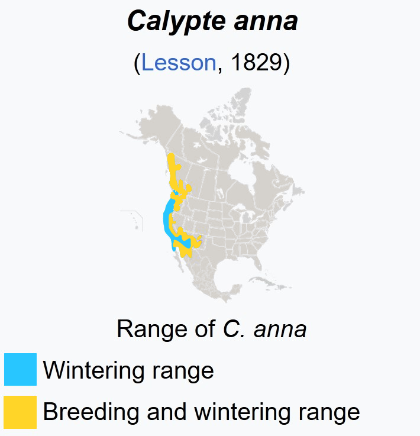
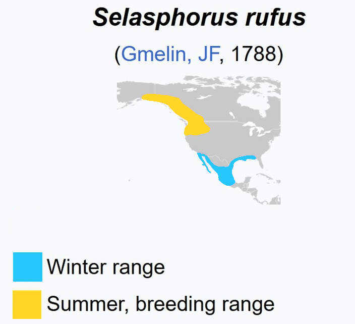
Adapted from Wikipedia
Visit patterns over the summer
Code
library(tidyverse)library(lubridate)library(gridExtra)library(ggpubr)# Read in the cleaned bird data from Part 1bird <-read_csv('https://raw.githubusercontent.com/teaswamp-creations/galiwatch.ca/refs/heads/quarto-website/posts/hummer-data-cleaning-170323/bird_scaled.csv') %>%mutate(Month =month(Date, label = T))# Create visit patterns over timep1 <- bird %>%ggplot() +aes(x = Date, fill = Species) +geom_histogram(bins=100, position='dodge', alpha =0.8) +labs(y='Number of IDs', x='', title='Rufous Migrates Away in July',subtitle ='Annas are present in BC year-round') +scale_fill_manual(values=c('chartreuse3', 'chocolate2')) +theme_pubr() +theme(legend.position ="bottom")p2 <- bird %>%ggplot() +aes(x = Date, fill = Species, y=after_stat(count)) +geom_density(bw=10, position='fill', show.legend = F, colour =NA) +labs(y='Proportion of IDs', x='Date') +scale_fill_manual(values=c('chartreuse3', 'chocolate2'))+theme_pubr()grid.arrange(p1, p2, ncol =1)
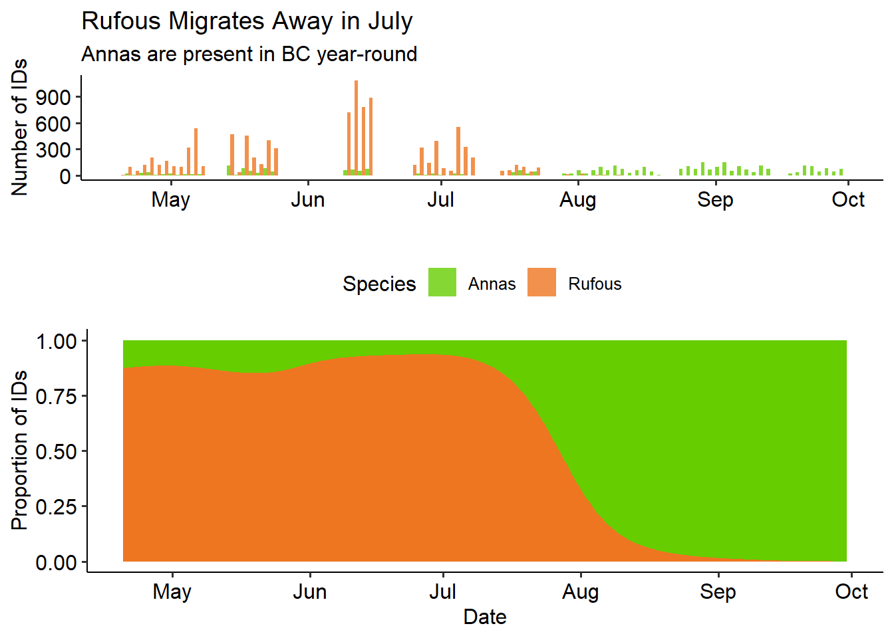
Here’s a map made from citizen scientist data: each blue dot is a Rufous sighting reported to iNaturalist.
🧠 Observation
There are a lot of Rufous ID’s in the first half of the summer, peaking in the second week of June. There are almost no more Rufouses left by August. There are gaps in observations when the feeder ran out of food and was not re-filled for a long time (eg. June 1st-15th).
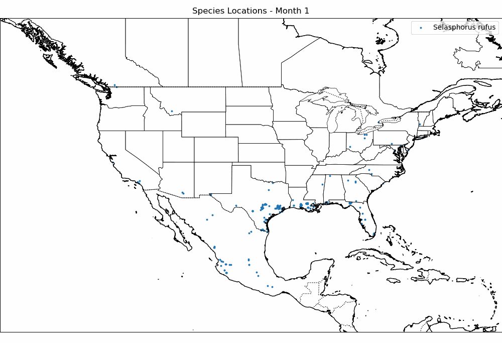
The Male Rufous leave earlier than the Female: they’re almost all gone by July. The latest dates we have for manually confirmed Rufous visits are:
The Annas seem to hover around 1:3 Male to Female ID ratio, with the dramatic exception of April. This may have to do with female nesting behaviours, but we don’t know for sure.
Visiting Hours
I thought the hours of the day in which birds visit the feeder might give interesting insight into their behaviour. After poking around in the data, I found that visiting hours vary widely from month-to-month. In both species, we see a big dip in visits from 12-3pm in June. Our hypothesis is that this has to do with avoiding the sun or hottest temperatures in the middle of the day. June was an especially hot month for 2021, and there were lots of forest fires. However, it’s somewhat surprising to not also see this effect in July and August, which are generally similar to June in terms of weather.
Code
bird %>%filter(Species =='Rufous') %>%filter(Date <ymd('2021-08-01')) %>%ggplot(aes(x=Hour, fill = Sex)) +geom_bar(position ='stack', alpha =0.8) +facet_wrap("~Month", scales='free_y') +scale_fill_manual(values=c('chocolate1', 'chocolate4')) +labs(title='Rufous visit times vary by month', subtitle ='Note the mid-day dip in June', y ='Number of IDs', x ='Hour of Day') +theme_pubr() +theme(axis.text.x =element_text(angle =0))
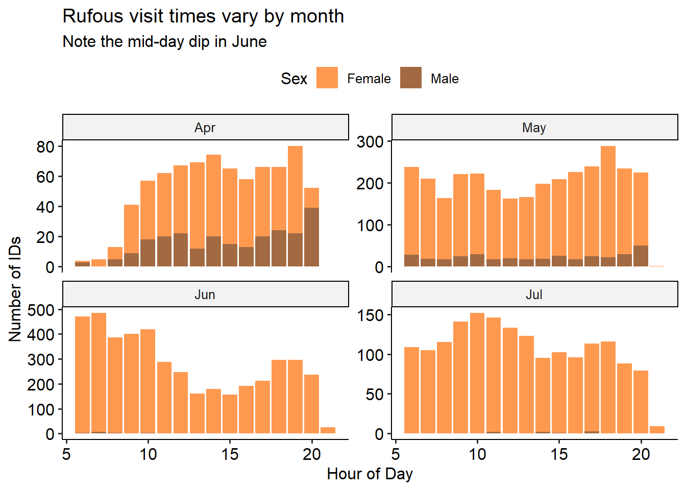
Code
bird %>%ggplot(aes(x=Hour, fill = Sex)) +geom_bar(position ='stack', alpha =0.8) +facet_wrap("~Month", scales='free_y') +scale_fill_manual(values=c('chocolate1', 'chocolate4')) +labs(title='Rufous visit times vary by month', subtitle ='Note the mid-day dip in June', y ='Number of IDs', x ='Hour of Day') +theme_pubr() +theme(axis.text.x =element_text(angle =0))
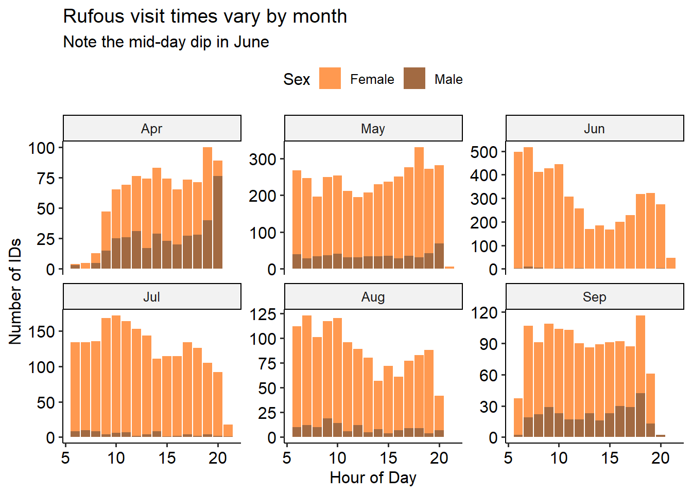
🧠 Observation
There are the most ID’s in June, even though this is after all the males have migrated.
Code
bird %>%group_by(Month, Hour, Species, Sex) %>%summarise(n_visits =n()) %>%group_by(Hour, Species, Sex) %>%summarize(mean_n =mean(n_visits, na.rm=T),se_n =sd(n_visits, na.rm=T) /sqrt(n()) ) %>%ggplot(aes(x = Hour, y = mean_n, colour = Species)) +geom_point(size =2, alpha =0.8) +geom_errorbar(aes(ymin = mean_n - se_n, ymax = mean_n + se_n), width =0.3, alpha =0.6) +geom_smooth(method ='loess', se =FALSE, alpha =0.7) +facet_wrap("~Sex", scales ='free_y') +scale_color_manual(values =c(Annas='chartreuse3', Rufous='chocolate2')) +labs(title ='Rufous visit times vary by month', subtitle ='Note the mid-day dip in June', y ='Mean Number of IDs per Hour', x ='Hour of Day') +theme_pubr() +theme(axis.text.x =element_text(angle =0))
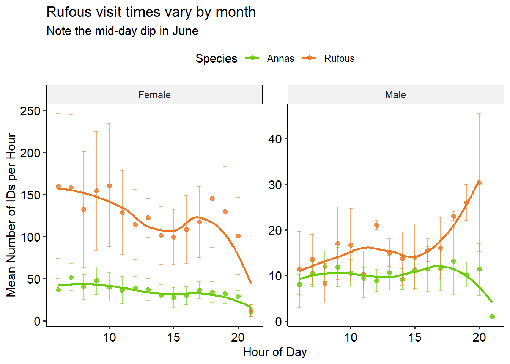
🧠 Observation
Almost all ID’s in April are male. There’s a big dip in ID’s in the middle of June.
Weather data
Now we’ll make use of the data from our weather station. I’ve created a column MergeTime in both dataframes, to make it easy to merge the bird and weather data. Read in and prepare the weather data
Code
weather <-read_csv('https://raw.githubusercontent.com/teaswamp-creations/galiwatch.ca/refs/heads/quarto-website/posts/_hummer-seasons-140823/WS_hours.csv') %>%# retain only non-duplicatesdistinct() %>%# Clean up timestamps, convert to celsiusmutate(Date =ymd(Date), MergeTime =ymd_hms(paste(Date, Time)),`Temp C`= (`Outdoor Temperature F`-32) * (5/9) )
The air quality measures show the concentration of particulates at three different size thresholds (in micrometers), as well as the outdoor air temperature recorded from April - December 2021.
Based on the visiting hours plots, it seems like there may be a temperature effect in play, especially in June. To look into this, I made some linear regressions by month. There seemed to be some strong negative correlation in the hot months of June, July, August!
Relationship between temperature and number of visits differs by month.
Code
# Merge bird and weather databird_weather <-merge(bird, weather, all.x=T) %>%filter(Species=='Rufous') %>%filter(Date <ymd('2021-08-01')) %>%group_by(Month, Hour, Species) %>%summarise(n=n(), temp =median(`Temp C`, na.rm=T), .groups='keep')bird_weather %>%ggplot(aes(x=temp, y = n))+geom_point(colour ='chocolate2', alpha =0.7, size =2) +geom_smooth(method='lm', colour ='chocolate4', se =TRUE) +labs(title='Rufous Temperature Sensitivity', subtitle ='Negative correlation in hot months',x='Temperature (°C)', y ='Number of Visits')+facet_wrap("Month", nrow=2, scales ="free_y")+theme_pubr()
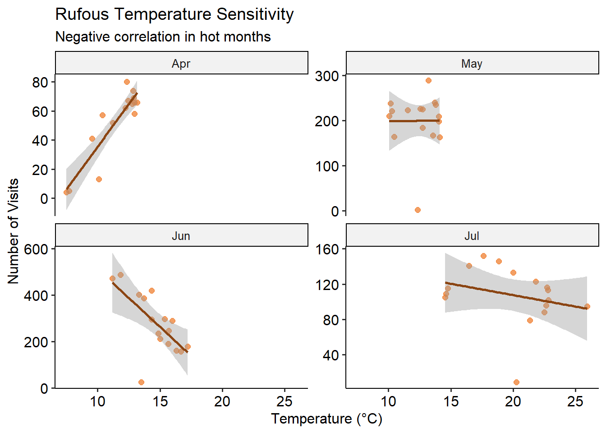
Code
# Anna's temperature sensitivitybird_weather_anna <-merge(bird, weather, all.x=T) %>%filter(Species=='Annas') %>%group_by(Month, Hour, Species) %>%summarise(n=n(), temp =median(`Temp C`, na.rm=T), .groups='keep')bird_weather_anna %>%ggplot(aes(x=temp, y = n))+geom_point(colour ='chartreuse3', alpha =0.7, size =2) +geom_smooth(method='lm', colour ='chartreuse4', se =TRUE) +labs(title='Anna Temperature Sensitivity', subtitle ='Both species avoid high temperatures',x='Temperature (°C)', y ='Number of Visits')+facet_wrap("Month", scales ="free_y")+theme_pubr()
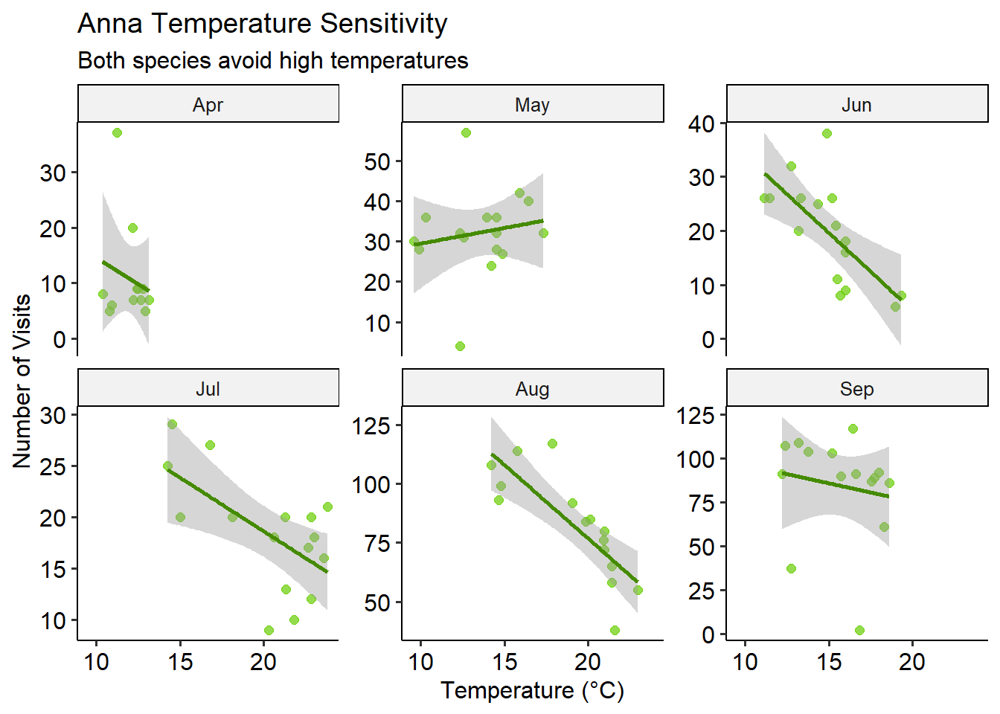
🧠 Observation
Both species seem to dislike temperatures above 20 degrees C. There’s a fairly strong month-specific effect - this may reflect some behaviour changes based on the Rufous migration.
Hourly preferences
Code
bird_weather %>%ggplot(aes(x=Hour, y = n))+geom_point(colour ='chocolate2', alpha =0.7, size =2) +geom_smooth(method='loess', colour ='chocolate4', se =TRUE) +labs(title='Rufous Hourly Patterns', subtitle ='Diurnal activity varies by month',x='Hour of Day', y ='Number of Visits')+facet_wrap("Month", nrow=2, scales ="free_y")+theme_pubr()
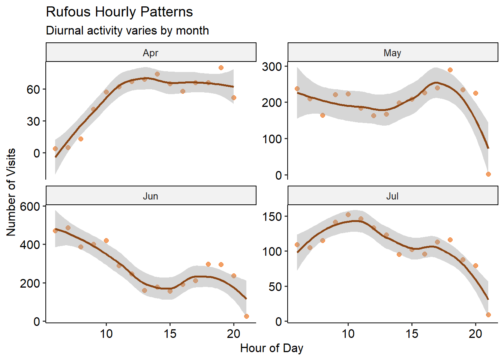
Code
bird_weather_anna %>%ggplot(aes(x=Hour, y = n))+geom_point(colour ='chartreuse3', alpha =0.7, size =2) +geom_smooth(method='loess', colour ='chartreuse4', se =TRUE) +labs(title='Anna Hourly Patterns', subtitle ='Strong diurnal patterns with seasonal variation',x='Hour of Day', y ='Number of Visits')+facet_wrap("Month", scales ="free_y")+theme_pubr()
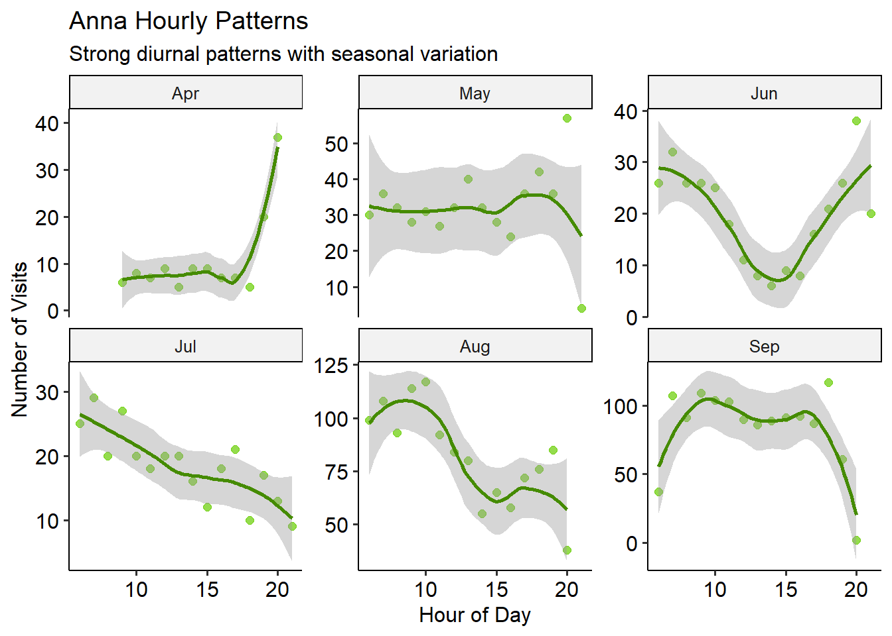
🧠 Observation
Both species show strong diurnal patterns that vary by month. The mid-day dip in June is particularly pronounced, likely due to the extreme heat and poor air quality from forest fires that year.
Summary
The seasonal patterns in our hummingbird data reveal fascinating insights into how these tiny birds adapt to changing conditions:
🧠 Key Findings
Migration timing: Male Rufous leave significantly earlier than females, with males gone by early July while females persist until late July
Temperature sensitivity: Both species show reduced activity at temperatures above 20°C, with the effect most pronounced in June during the 2021 heat wave
Diurnal patterns: Visit timing varies dramatically by month, with a notable mid-day avoidance during the hottest periods
Sex ratios: Anna’s show consistent male:female ratios except in April, while Rufous ratios shift dramatically as males migrate first
The interplay between migration timing, temperature preferences, and daily activity patterns suggests these birds are finely tuned to their environment. The dramatic mid-day dip in June 2021 likely reflects the extreme conditions during that year’s heat wave and forest fires.